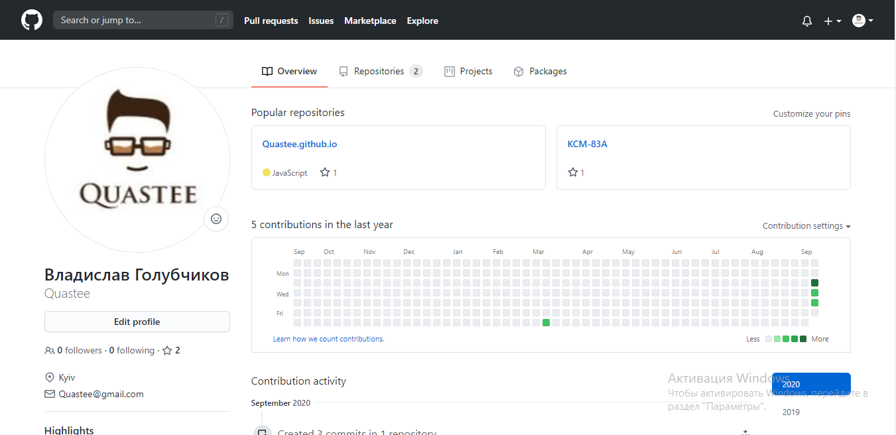
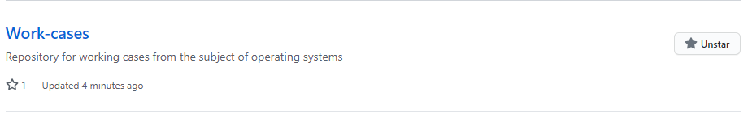
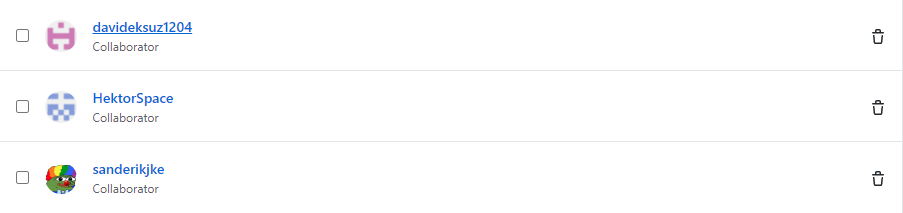
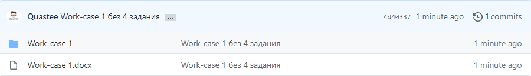

Git є набором утиліт командного рядка, які дозволяють відстежувати і записувати зміни в файлах (найчастіше коду, але ви можете відстежувати будь-що). З її допомогою ви можете відновити старі версії вашого проекту, порівнювати, аналізувати, об'єднувати зміни та багато іншого. Цей процес називається управлінням версіями. Є багато подібних систем контролю версій. Можливо, ви вже чули деякі з них:
SVN,
Mercurial,
Perforce,
CVS,
Bitkeeper та ін.
2. Зареєструйте власний git-аккаунт (gitlab, github або інша платформа).

3. Створіть новий публічний репозиторій, який будете використовувати для додавання всіх виконаних робіт з дисципліни
«Операційні системи» (якщо працюєте в команді долучіть інших учасників команди до його редакторів).


4. Розмістіть свій перший звіт про виконаний Work-case 1 (презентацію, текстовий файл, html-сторінку) у даному репозиторії .
